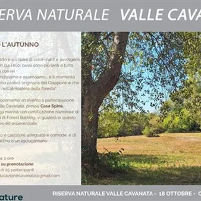

dom 18 ott · dalle 15:30
Forest bathing
L'autunno è iniziato, la Natura cambia abito e si colora di colori caldi e avvolgenti dal rosso al marrone. E’ il momento in cui i suoi passi sono più lenti e tutto rallenta con lei. Seguiamola anche noi, rallentiamo, respiriamo e osserviamo... è il momento giusto per praticare…
 Indicazioni
Indicazioni
- Costi e prenotazioni
- Costo non indicato · Prenotazione non indicata
- Programma
- Programma da verificare. Apri la fonte ufficiale per orari e possibili aggiornamenti.
- In caso di maltempo
- Nessuna indicazione specifica pubblicata.
- Note
- Acquisito automaticamente dalla fonte.
L’EVENTO
Descrizione completa
L'autunno è iniziato, la Natura cambia abito e si colora di colori caldi e avvolgenti dal rosso al marrone. E’ il momento in cui i suoi passi sono più lenti e tutto rallenta con lei.
Seguiamola anche noi, rallentiamo, respiriamo e osserviamo... è il momento giusto per praticare il Forest Bathing! Una pratica originaria del Giappone, che significa proprio "immergersi nell'atmosfera della foresta".
Domenica 18 ottobre alle 15:30 vi proponiamo un evento a partecipazione gratuita alla Riserva naturale Valle Cavanata, presso Casa Spina.
Deborah Nicolodi, naturalista ed ecologa marina con certificazione nazionale di benessere forestale e istruttore CSEN di Forest Bathing, vi guiderà in questo percorso immersivo ed esperenziale.
MODALITÀ DI PARTECIPAZIONE
L’evento è organizzato a numero chiuso. La partecipazione è possibile solo su prenotazione. Per aderire inviate una mail all’indirizzo info.educazionecavanata@gmail.com con il vostro nominativo e un recapito telefonico. La prenotazione è effettiva al ricevimento della conferma da parte dello staff della Riserva naturale Valle Cavanata. La partecipazione all’evento è gratuita.
NOTE ORGANIZZATIVE
Data: domenica 18 ottobre
Orario di inizio: 15:30
Durata: 2 ore
Luogo di ritrovo: Casa Spina - maggiori dettagli seguiranno nella mail di prenotazione
Difficoltà: adatto a tutti
Equipaggiamento consigliato: abbigliamento e calzature comodi, tappetino o asciugamano, borraccia con acqua, spray antizanzare
Quota di partecipazione: gratuito
Prenotazione: obbligatoria all’indirizzo info.educazionecavanata@gmail.com
IL PROGRAMMA
Programma e orari
Appuntamenti raccolti dalle fonti elencate. Dove manca un orario, non è ancora disponibile in questa scheda.
Programma pubblicato
- Dal 2026-10-18 al 2026-10-18
INFORMAZIONI UTILI
Prima di partire
- Controllare la fonte prima di partire.
ORGANIZZAZIONE